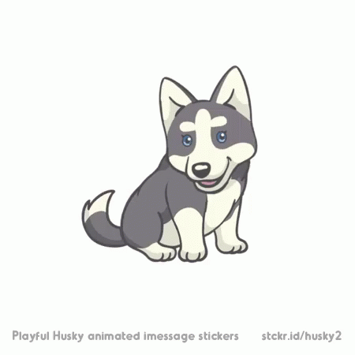

Это простейший пример HTML-документа.
Этот *.html-файл может быть одновременно открыт и в Notepad, и в Netscape. Сохранив изменения в Notepad, просто нажмите кнопку Reload ('перезагрузить') в Netscape, чтобы увидеть эти изменения реализованными в HTML-документе.